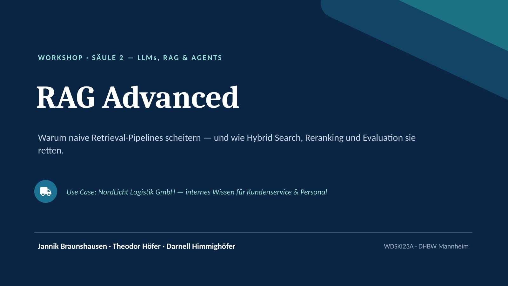

RAG Advanced
NordLicht · Workshop
00:00
Reset
Notizen
Übersicht
Vollbild
?

‹
›
Folie
1
/
39
Schließen (Esc)
Alle Folien
Klicken, um direkt dorthin zu springen.
Tastaturbefehle
→ / Leertaste
Nächste Folie
←
Vorherige Folie
Pos1 / Ende
Erste / letzte Folie
N
Sprechernotizen ein- und ausblenden
O
Übersicht aller Folien
F
Vollbild
T
Timer starten oder pausieren
Esc
Overlay schließen
Alles klar